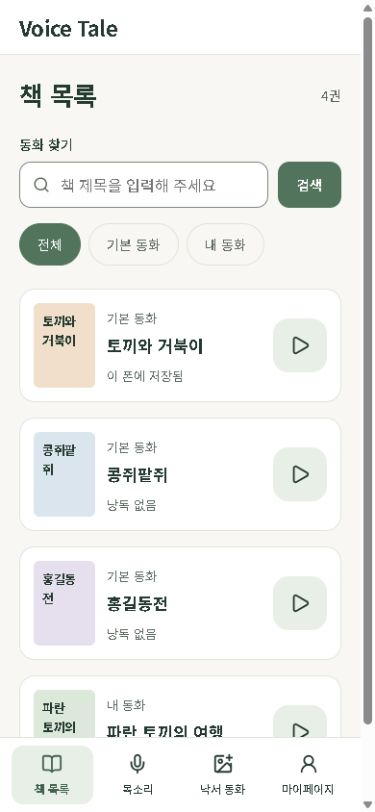

보호자의 목소리 준비
모바일에서 녹음과 파일 선택을 각각의 입력 과업으로 나눴습니다. 어린이가 기기에서 감상하는 흐름과 보호자의 준비 흐름을 분리했습니다.
익숙한 목소리로, 새로운 이야기 속으로.
보호자의 모바일 입력과 어린이의 터치 화면 감상을 연결하는 동화 경험.


GIST AI&IoT 메이커톤 당시 팀의 제작 현장입니다. 실물 터치 화면에 표시된 Voice Tale 책장과 Raspberry Pi 조립, 부품과 배선을 준비한 작업 공간을 함께 담았습니다. 아래 사진은 대회 당시 기록이며, 위의 최신 dev 프론트 캡처와는 시점이 다릅니다.
제14회 GIST AI&IoT 메이커톤 404팀의 AI 동화 프로젝트. 웹을 기반으로 모바일과 Raspberry Pi 전용 터치 화면을 구성하고, 보호자의 입력에서 어린이의 감상까지 서로 다른 사용 환경을 연결했습니다.
콘텐츠를 입력하는 보호자와 이야기를 감상하는 어린이의 과업이 다릅니다. 작은 전용 터치 화면에서는 재생 행동을 쉽게 발견하고 조작할 수 있는 구성이 필요합니다.
모바일 입력과 기기 감상을 나누고, 동화 종류를 먼저 선택한 뒤 중앙의 큰 조작부로 재생하는 흐름을 구성했습니다.
제공 화면과 문서에서 재구성한 과업 흐름 · 사용자 조사 결과가 아닙니다.
보호자는 목소리·그림을 준비하고, 어린이는 전용 화면에서 콘텐츠를 선택하도록 나눴습니다.
최신 Pi 화면에서는 큰 재생 조작과 목소리 변경 경로를 제공하고 재생 상태에 맞춰 조작을 노출합니다.
모바일은 390×844, Pi는 800×480의 최신 프론트 캡처로 정보와 조작 배치를 확인했습니다.
목소리와 그림을 준비하는 보호자에게는 입력과 관리가, 이야기를 듣는 어린이에게는 선택과 재생이 중요하다고 보았습니다. 모바일과 터치 화면의 역할을 나누고, 감상 화면의 주요 조작을 중앙에 모았습니다.
감상 화면에 준비 기능을 모두 넣기보다, 사용자와 사용 순간에 따라 기능을 나누는 방향으로 구성했습니다.
웹으로 만든 화면을 모바일 브라우저와 Raspberry Pi의 터치 디스플레이에 맞춰 구성했습니다. 화면 구현, AI·서버 처리, 기기 제어는 서로 다른 역할을 맡으며 연결 상태를 함께 다뤄야 했습니다.
| 기술 영역 | 맡은 역할 | 연결 시 고려한 점 |
|---|---|---|
| React 기반 웹 UI | 모바일의 녹음·그림 입력, 기기의 선택·재생 | 화면 크기와 터치 방식에 맞춘 UI 분리 |
| 서버·AI 처리 | 목소리·그림 입력을 처리하고 동화·음원 제공 | 생성 요청과 결과 준비 상태 구분 |
| Raspberry Pi 기기 환경 | 전용 터치 화면, 네트워크·오디오·로컬 저장 | 클라우드 처리와 기기 내부 기능의 경계 구분 |
최신 코드에는 API 호출과 작업 상태 처리가 구현돼 있습니다. 이번 캡처는 백엔드를 실행하지 않고 기존 테스트 데이터로 UI를 확인한 결과이며, 실물 Pi·Android 앱·AI 처리의 통합 검증은 아닙니다.
Figma 레이아웃·베리언트와 프론트엔드 UI를 맡았습니다. 제공된 화면·기획 문서에서 선택 상태와 사용자별 화면 역할을 정리했습니다.
| 구간 | 화면에 보이는 것 | 자료 수준 |
|---|---|---|
| 보호자 입력 | 녹음·파일 선택·그림·요청 | 최신 dev 프론트 / 테스트 데이터 |
| 콘텐츠 선택 | Voice / Image 분류와 책 목록 | 800×480 최신 프론트 |
| 목소리 선택 | 목소리 목록과 선택 표시 | 최신 목소리 선택 UI |
| 감상 조작 | 재생·이전·다음·정지 | 상태별 재생 UI |
| 기기 준비 | Wi-Fi·QR·기기 정보 | 최신 초기 설정 UI |
이 표는 새로 정리한 설명 자료입니다. Figma 베리언트 원본이나 생성 상태 API의 구현 증거를 대신하지 않습니다.
GIST AI&IoT 메이커톤 404팀
Figma 레이아웃·베리언트와 프론트엔드 UI를 맡았습니다. 음성·이미지 처리와 기기 연결이 이어져야 하는 팀 프로젝트인 만큼, 화면의 동작과 다른 영역이 맡아야 할 일을 구분하는 것이 중요했습니다.
백엔드 연결 안내에는 녹음·파일 선택·미리듣기 같은 로컬 동작과, 업로드·음성 복제·생성 결과 저장처럼 서버 연결이 필요한 동작이 구분돼 있습니다. 버튼이 보이는 상태와 기능이 실제 완료된 상태를 같은 것으로 보지 않도록 연결 기준을 정리한 자료입니다.
동화 생성과 Pi 전송을 별개의 동작으로 나누고, 준비 중인 결과를 재생 가능 상태로 보이지 않도록 대기·처리 중·완료·실패 상태가 제안돼 있습니다. 기기 연결에서도 로컬 화면 전환을 실제 등록 성공으로 처리하지 않는 기준이 남아 있습니다.
서로 다른 영역을 연결할 때는 “이 화면이 나왔다”보다 “무엇이 끝났고, 다음 담당자가 무엇을 받아야 하는가”를 분명하게 만드는 것이 필요하다고 보았습니다.
2026년 11월 2일 백엔드 연결 안내와 제공 자료 기준입니다. 생성 상태와 API는 당시 협의를 위한 제안이며, 최종 합의·통합 완료와 구분합니다.
모바일 입력·관리와 Pi의 선택·재생을 나눈 최신 프론트 화면을 구성했습니다. 최신 dev에서는 계정·동화·목소리·작업 상태 API를 다루는 코드도 확인했으며, 여기서는 백엔드 없이 UI만 검토했습니다.
어린이의 재생 조작 이해도, 보호자의 입력 완료 흐름, 실제 디바이스 터치와 오디오 동작을 함께 검증해야 합니다.
현재 화면은 2026년 11월 15일 dev 66b1e1e의 실제 프론트 컴포넌트를 저장소의 테스트 데이터로 렌더링한 캡처입니다. 백엔드는 실행하지 않았고, 테스트 음원은 무음 데이터입니다. 최신 프론트 캡처와 대회 당시 실물 기기 사진은 별도로 표시합니다. 현장 사진만으로 AI 생성·서버 연동·오디오 품질의 검증을 주장하지 않습니다. 예전 화면과 설계안은 과거 자료로 따로 보존했습니다. Figma 담당 역할은 본인 설명 기준입니다.
2026년 11월 15일 수집 자료 기준입니다. 담당 역할은 본인 설명을 반영했으며, 팀 산출물 전체를 개인 기여로 해석하지 않습니다.
제공된 화면 26개와 관련 문서 2개입니다. 핵심 사례 외의 화면·중간안·검토 기록도 구분해 열어볼 수 있습니다.
수집용 중복 목록·개인 기여 검토표·로컬 경로와 원시 성능 JSON은 제외했습니다. 원문 속 로컬 경로·이메일은 생략했으며, 당시 테스트 보고와 계획은 작성 시점의 기록으로 보존했습니다.